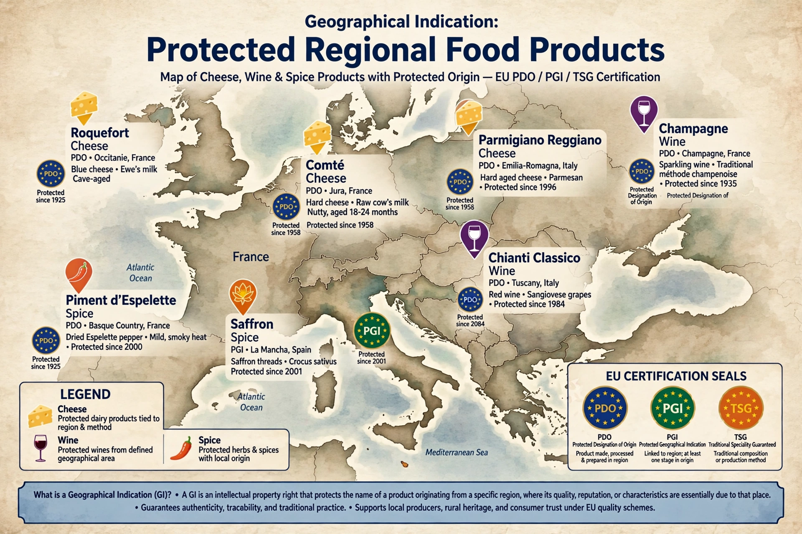

A geographical indication (GI) is a name or sign used on products which corresponds to a specific geographical location or origin (e.g., a town, region, or country). Its use, as a form of certification, acts as assurance that the product possesses certain qualities, is made according to traditional methods, or enjoys a reputation due to its geographical origin.

GIs are covered by the WTO TRIPS Agreement (Articles 22-24), with stronger protection for wines and spirits. The European Union operates PDO, PGI and TSG schemes; France's AOC system was a model.
Proponents argue GIs preserve terroir, rural livelihoods and traditional knowledge, and prevent consumer deception. Critics, notably in New World countries, argue some terms have become generic.